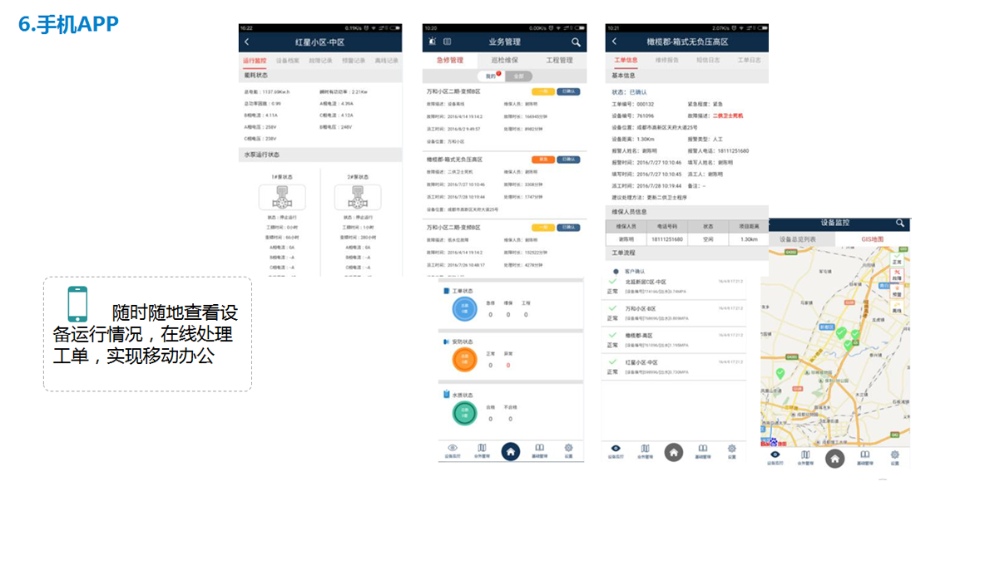
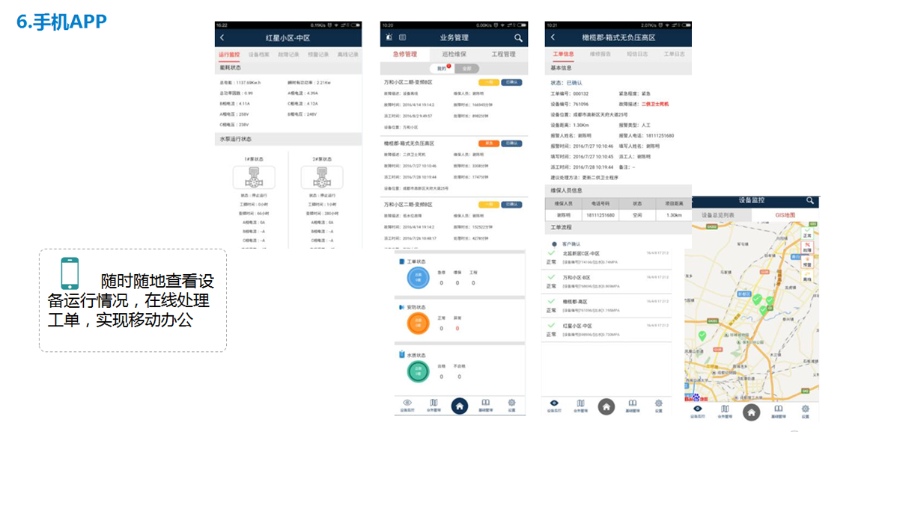

水闸监控和控制系统
背景

自动化技术和信息技术为泵阀企业的自动化管理带来了极大便利，然而随着泵阀数量的增多和客户分布的广域性，水利企业无法实时获取泵阀的状态、位置和监控参数等。如果相关设备发生故障，无法自动或远程控制故障或关联设备，也无法定位和通过相关维护人员及时到达现场维修，影响客户企业生产甚至造成安全事故；另一方面，泵阀设备众多，分布光散，随着设备的长期使用，设备运转寿命到期，泵阀厂家将无法及时掌握，设备不能及时更换，这将为客户企业生产科营运带来极大的故障安全隐患，造成不必要的经济损失。
 
